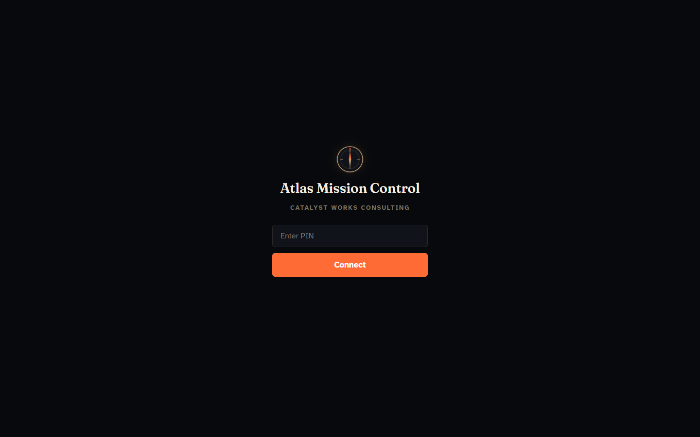
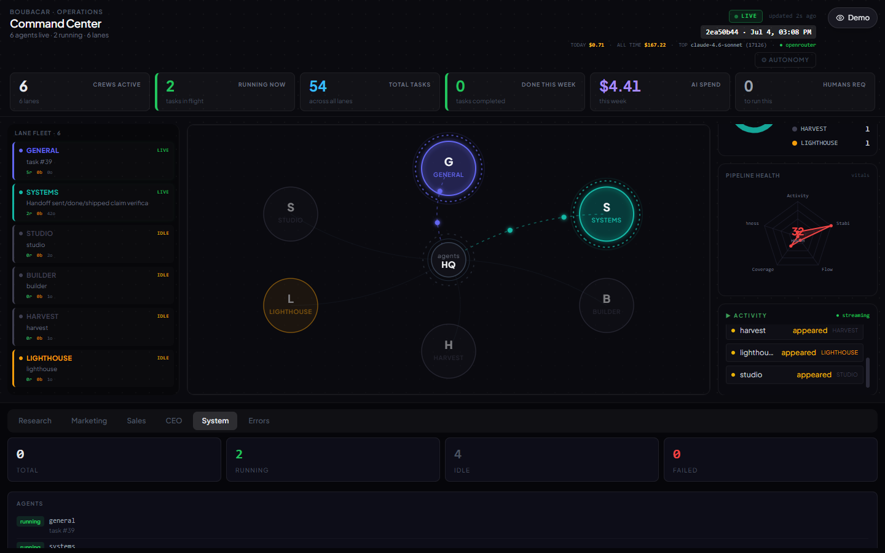
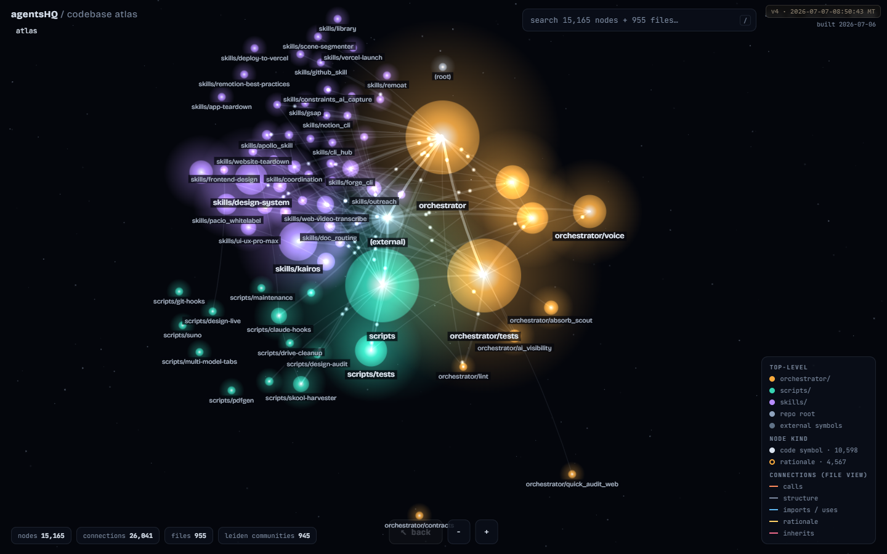

The one operations board that stays on your screen all day: how much work got done, how today compares to the last seven days, what it is costing, and what needs your hand. Built by extending what is already live, not by building dashboard number three.
VERDICT: GO Extend Atlas Mission Control at /atlas One decision needed from you
Per the house rule, claims about current UI come from looking, not assuming. Today's pass, all on 2026-08-15:
| Source | Method | What it settled |
|---|---|---|
docs/decisions/atlas-consolidated-dashboard-goal-state-2026-08-10.md | Read in full, 369 lines | The complete dashboard inventory, the Option A recommendation, the 15-point done checklist. This PRD builds ON it and re-decides nothing it settled. |
dashboard/backend/main.py + frontend | Code read, every route | 21 endpoints, what each reads. No auth on the ops path. Hand-rolled SVG charts, no chart library anywhere. |
| orc-postgres, live | Direct psql over SSH | 119 tables enumerated. Column-level schema for the 9 that matter here. Row counts and date ranges proving day-over-day is buildable today. |
https://agentshq.boubacarbarry.com/atlas | Playwright, screenshot, looked at | Live, PIN gate up, brand DNA confirmed (dark navy, compass, serif, orange). |
https://boubacarbarry.com/monitor | Playwright, screenshot, looked at | Connects LIVE but build stamp is Jul 4, "0 done this week" against 54 total tasks, feeder table stale since 8/05. Live infra, stale build, starving data. |
| Archived graph explorer | Playwright on the archive URL, screenshot | 15,165-node galaxy renderer, self-contained, beautiful, pointed at dead 7/06 code data. The renderer is reusable; the data is not. |
PRDs: cos-data-home, cos-v2 pair, service-intelligence-layer + skills/second-brain-query/SKILL.md, docs/roadmap/atlas.md, TASK_BOARD 8/10 lane block | Read in full via research agents | The standing vetoes, the store map, the render doctrine, the settled decisions list in section 8 below. |



Honest gap: the second-brain query tool itself was attempted through both its documented paths and transport-failed on this machine (a known, documented limitation of running it off-VPS). Prior work was found by direct repo research instead, which found more. That failure is itself evidence for the corpus-health tile proposed below.
| Surface | State | Verdict |
|---|---|---|
Atlas Mission Control · /atlas, static HTML + vanilla JS + FastAPI, PIN bearer auth | LIVE. 16 tiles, ~45 endpoints, 13 routed sub-pages, test coverage, deploys with a restart | The one board. Extend it. |
| Command Center monitor · React/Vite, image-built service, public route, no auth | Live infra, Jul 4 build, fixture manifest (env var never set), feeder table stale since 8/05 | Demo prop. Finish it as a sales asset later, never as your ops board. Its visual components get mined for Atlas. |
| Codebase galaxy explorer · archived review page | Static snapshot of 7/06 code | Parts donor. The renderer is the phase 3 memory-graph sub-page. |
| Decision pages · job board, warm-lead boards, Money Map | Live, DB-backed, canonical per purpose | Leave alone. A decision page is where you act on one thing; the board is where you see everything. Different jobs. |
Paused branch · feat/atlas-dashboard-gate-usage-sys-0810 @ 6b82344b7 | [WIP], unmerged, needs rebase. Gate-queue-by-risk-tier, usage tracker, SYS backlog tiles, ~70% of the tile work | Phase 0. Rebase, verify, merge. Do not redo. |
Read from the live database today, not guessed. Every proposed tile in this PRD names its row in this table. Anything not in this table is flagged needs new instrumentation and parked.
| Source | Rows · range (live 8/15) | Timestamps | Powers |
|---|---|---|---|
llm_calls | 43,889 · since 4/21 | per-call ts, cost, model, agent, tokens | Usage cost today, cost by model/crew, call volume sparkline, day-over-day |
lane_tasks (+ notes) | 1,684 · since 7/13 | created/updated/completed_at, lane, priority, status | Work done today, per-lane throughput, SYS backlog by priority |
task_outcomes | 1,688 · since 4/24 | start/complete, success, cost per task | Crew success rate, cost per completed task |
agent_messages | 681 · since 6/20 | per message | Cross-lane bus activity stream |
tasks (coordination) | live claims | claim + lease expiry | Who is working what right now, contention |
data/gate_log.jsonl | every Gate tick | per event | Merges today, held-by-risk-tier queue (the "needs a tap" list) |
agent_manifest.yaml | full roster | last_worked_at, function_group, status | Agent roster tile. Exists, complete, and read by nothing today |
memory + memory_edges | 2,917 rows | indexed-at | Second-brain corpus size + freshness; phase 3 galaxy graph |
provider_health, alerts, service_errors, gate_errors | live | per event | Broken row: provider status, error stream |
docs/audits/usage-health/DIGEST.md | weekly, laptop-written | file date | Claude Code plan usage %, always labeled a local estimate with its file age |
cost_ledger, absorb_queue, leads, content board | live | per row | Existing tiles, kept as-is |
llm_calls, daily, last 8 days (queried live 2026-08-15): 8/08: 309 calls $0.60 8/09: 315 $0.62 8/10: 563 $0.85 8/11: 309 $0.61 8/12: 308 $0.63 8/13: 307 $0.56 8/14: 262 $0.57 8/15: 227 $0.37 (partial day)
Same shape works for lane_tasks.completed_at and Gate merges. The history is already there; nothing new needs to start logging before the comparison tile can ship.
You named the bar yourself: "how much work is being done, how effective we are that day compared to the previous days, how you are doing on usage." Here is exactly how each becomes a number, and the one trap we refuse.
| Question | Metric | Source | Comparison |
|---|---|---|---|
| How much work today? | Tasks completed + branches merged + LLM calls executed, shown as three separate counts | lane_tasks, gate_log.jsonl, llm_calls | Each vs its own trailing 7-day median, as a signed % chip |
| How effective vs previous days? | The same three counts plus crew success rate, each with a 7-day sparkline and delta | + task_outcomes.success | Median, not mean, so one monster day (8/10 was 2x normal) does not poison the baseline |
| How is usage doing? | API spend today (exact, from llm_calls) and Claude Code plan % (labeled estimate, from the digest, with its file age shown) | llm_calls, digest file | Spend vs daily cap; plan % vs week |
Today's tiles are grouped by which subsystem feeds them. Nobody thinks in subsystems at 7am. The board reorders into five rows, each one a question you actually ask, in the order you ask them, hero strip on top:
| Row | Question | Tiles |
|---|---|---|
| 0 · Pulse | How are we doing right now? | Work today, vs 7 days, spend today, plan usage (the hero strip) |
| 1 · Needs me | Is anything stuck on me? | Gate held-by-tier "needs a tap", approvals, priority queue, inbound |
| 2 · Broken | Is anything on fire? | Errors, cron liveness, provider health, heartbeats (with the "a pulse is not proof of work" caveat honored) |
| 3 · Money | What is it costing? | Spend + pacing, cost by crew, cost per completed task |
| 4 · Moving | Is the work moving? | SYS backlog by priority, absorb, content, leads, live claims |
| 5 · Roster + Brain | Who is on the field, and is the memory sharp? | Agent roster by function group (finally reading the manifest), second-brain corpus health |
Dark-first, matched to Atlas's live brand: near-black navy surfaces, serif display headings, the orange as the single accent. The categorical palette was machine-validated against Atlas's own surface with the dataviz skill's six-check validator, all checks passing (lightness band, chroma floor, colorblind separation, normal-vision floor, contrast):
#3987e5
#d95926
#199e70
#c98500
#d55181
These render in this page with the validated palette and real proportions. Numbers are sample values shaped from today's live pulls (the 227 calls and $0.37 are real 8/15 figures). This is what the top of Atlas looks like after phase 1.
fix/kie-media-retry · high riskheld 2dfeat/lead-capture-sweep · Tier Cheld 4hdocs/model-matrix-inline · Tier Cheld 1hPhase 3 teaser, parked on purpose: the archived galaxy renderer re-pointed at memory + memory_edges becomes /atlas/brain, your second brain as a living constellation you can search. It is the single most demo-worthy screen this system could show a prospect, and it is deliberately NOT in the weekend scope, because the weekend belongs to the numbers you look at daily.
The full Constraint-First Build Spec is saved agent-side at thepopebot/chat-ui/PRD.md and registered in the PRD registry. The load-bearing sections:
| Section | Content |
|---|---|
| 1 · One-Line Verdict | GO. Extend the live Atlas board. Door 1 on the founder-weight screen: it removes the daily "ask an agent how things are going" tax from your plate and adds no fulfillment you owe anyone. |
| 2 · The Single Problem | You cannot see, in one glance without asking anyone, how much work your system did today, whether that is better than yesterday, and what it cost. Answers exist but live in six places behind SSH and questions. |
| 3 · Non-Negotiables | PIN auth stays. Read-only. Zero build step. No new database. Weekend-sized. The 8/10 doc's settled decisions are inputs, not debates. |
| 4 · What We Will NOT Build | (1) No third dashboard, under any name. (2) No React rewrite of Atlas and no chart library; the monitor's own hand-rolled SVG proves we do not need one. (3) No composite effectiveness score; real counts with real deltas only. (4) No new Postgres tables; every tile reads what exists. (5) No write actions in this pass. (6) No auto-refresh under 30s. (7) The galaxy page does not enter the weekend. |
| 5 · Demand Signal | You, four times on record: the 8/10 "I want ONE dashboard" instruction, this 8/15 commission, the June cockpit spec, and daily status questions to agents that this board answers silently. |
| 6 · The User Who Matters | Boubacar, 7:00am, coffee, board already open on the second monitor. Twelve seconds of looking answers: anything need my tap, anything broken, are we ahead of yesterday, what did it cost. Then he goes and makes asks, which is the actual job. |
| 7 · Moment of Value | The pulse strip's delta chips. The instant "14 ▲ +27%" lands, the previous-days comparison he asked for is answered without a single question typed. |
| 8 · Build Contract, v1, LOCKED | Rebased + merged paused branch; one new /atlas/pulse endpoint; hero strip with 4 stats + sparklines + deltas; tile regroup into the six question rows; roster tile reading the manifest; second-brain health tile; per-tile source + age footers; three-state failure rendering; mobile hamburger; LIVE_STATE row for the Atlas URL. Nothing else. |
| 9-11 · Tech, Integration, Data | Vanilla JS + FastAPI, additive routes behind the existing bearer PIN. Sources exactly as the section 3 table. State lives where it already lives; the board owns none. |
| 12 · Failure Modes | Top 3 with mitigations: a tile silently lies (three-state contract + fixture grep in acceptance), the Gate tap stalls the weekend (phase 0 flagged to you Friday), schema drift breaks a tile (per-endpoint missing-data tests, pattern already in the test file). |
| 13-14 · Success + Ship | Success: you stop asking agents for daily status in week one; the board answers first. Ship condition: the 18-point checklist in section 10 below, every box machine-checkable. |
| 16 · Monetization Angle | Direct: reclaims daily founder minutes for revenue asks. Adjacent: this board, demo-mode stripped, is the "watch my system run itself" screen for the how-I-built-it cohort and any stack-licensing conversation. The monitor becomes that prop; this PRD is written cleanly enough to hand a paying client as the template. |
| 17 · Phase 2 Parking Lot | Galaxy memory graph at /atlas/brain; Money Map tile (Supabase); asks-made-today counter; Stripe/Plausible wiring; monitor demo-prop finishing pass; cross-provider token tracking (blocked upstream). |
| 18 · Open Questions | Exactly the three in section 8 below. Build is blocked on the first only. |
| 21 · Anti-Pattern Watch | Must never become: a wall of decorative tiles nobody asked for; a second scoreboard competing with the Money Map (the Money Map stays the business scoreboard, this is the machine-room board); a demo that lies politely. |
Context: the one-canonical-page rule makes "which surface is THE board" your call, and the 8/10 research already framed it. It has waited 5 days. Two standing PRDs of yours also veto any NEW surface ("a new surface is a second place to check"). This plan honors that veto by construction: it adds zero surfaces, it extends the one you have and demotes the imposter.
| Option | What happens | Cost / risk |
|---|---|---|
| A · Extend Atlas, monitor becomes demo prop RECOMMENDED | Everything in this PRD. One board, one URL, weekend-sized | Small, additive, reversible tile by tile |
| B · Finish the React monitor as the board | Rebuild 16 working tiles in React, add auth it never had, rebuild image per change | Large; replaces a working thing with a stalled thing; already failed once for a nameable reason |
| C · Fresh build | Dashboard number three | The exact move your 8/10 instruction exists to prevent |
Recommendation: A, for the reasons the whole document is. The two things only you can answer:
| Phase | Ships | Size |
|---|---|---|
| 0 · Sat AM | Rebase feat/atlas-dashboard-gate-usage-sys-0810 onto main, run the paused verification (live curls, Playwright desktop + 375, unauth 401 checks), merge via your Gate tap. Gate-by-tier, usage, SYS backlog tiles go live | Half-day, 70% pre-built |
| 1 · Sat PM | /atlas/pulse endpoint (three counts + medians + deltas from lane_tasks, gate_log, llm_calls), hero strip with sparklines and count-up, tile regroup into question rows, source + age footers everywhere | Half-day |
| 2 · Sun | Roster tile from the manifest, second-brain health tile, three-state failure rendering swept across all tiles, cost-by-crew view, LIVE_STATE row, full acceptance run | Day |
| 3 · Parked | Galaxy memory graph, Money Map tile, asks counter, monitor demo finishing | Explicitly not the weekend |
| Voice | Failure found | Design answer now baked in |
|---|---|---|
| Operator | Numbers do not map to what he actually cares about, so glancing stops paying | Hero strip leads with his three named questions verbatim; Money Map stays the business scoreboard, this board never competes with it |
| Skeptic | One tile lies once and the whole board is dead (the monitor's exact cause of death) | The truth contract: three failure states, source + age on every tile, fixture grep in acceptance. Ranked the #1 risk |
| Aesthete | "Next level" fizzles into twenty gray rectangles | Validated palette, serif + orange brand carry-over, sparklines, count-up, and the mockups decided the look before any code |
| Economist | Schema drift quietly breaks tiles and it rots like the monitor | Read-only additive GETs, per-endpoint missing-data tests, zero new services or deps to maintain |
| Governor | Violates the no-new-surface veto, or stalls at the Gate tap, or redoes the paused branch | Consolidation-not-creation stated in the contract; the tap is flagged to you in advance; phase 0 folds the branch in, never redoes it |
PASS 8 / WARN 2 / FAIL 0. Warns, kept visible on purpose: (P5) the day-over-day definition is the complexity magnet, held to per-metric medians with no composite index, revisit only if you ask for one number; (P2) the galaxy page is the scope-creep magnet, held out of v1 by contract. Verification (P6): every ship-condition line is a command or a screenshot, none is a judgment call.
Top finding: the "next level look" was already built in-house twice. The monitor's stat strip, activity stream and count-up animations, and the archived galaxy renderer, are exactly the aesthetic requested, already written, already yours. Ported patterns beat new builds. Cut list: chart library (hand-rolled SVG already proves out), React rewrite (stalled once already), new metrics tables (llm_calls + lane_tasks already carry the history), buying any monitoring SaaS (the data never leaves your Postgres).
Extends the 8/10 doc's 15-point machine-verifiable checklist. A build task claiming completion cites each line with its command output or screenshot path. Highlights:
{"available": false, "reason": ...}.grep -r fixture across the ops path returns nothing.docs/LIVE_STATE.md carries the canonical Atlas URL row (a named 5-day-old defect, fixed in this pass).Sources and provenance: the 8/10 consolidation research doc, the live schema pull, the paused branch, the three screenshots above, and the four standing PRDs named in section 1. This document re-decides nothing they settled and cites where it builds on them.